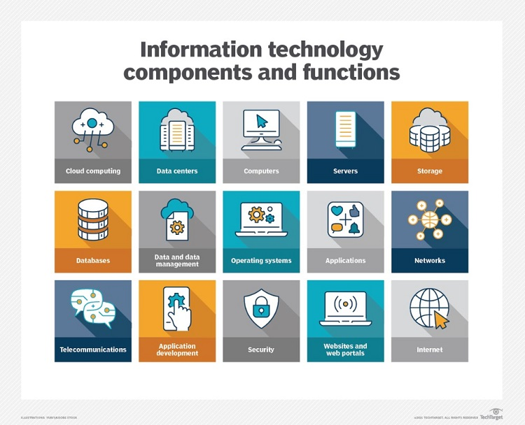
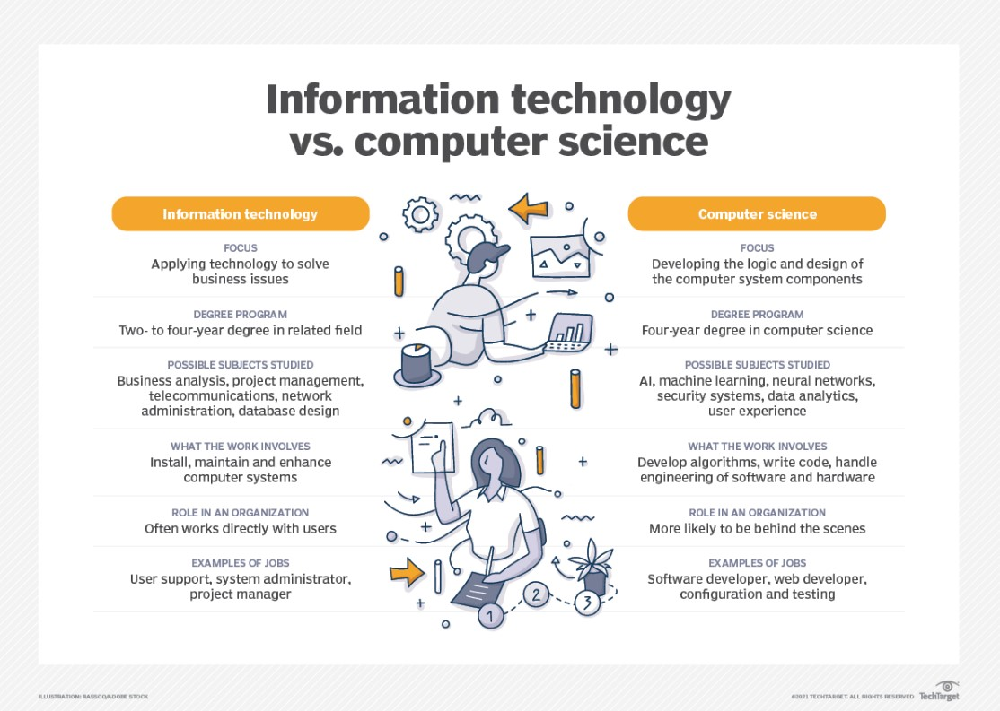

A tecnologia da informação (TI) é o uso de qualquer computador, armazenamento, rede e outros dispositivos físicos, infraestrutura e processos para criar, processar, armazenar, proteger e trocar todas as formas de dados eletrônicos. Normalmente, a TI é usada no contexto das operações de negócios, em oposição à tecnologia usada para fins pessoais ou de entretenimento. O uso comercial de TI abrange tanto a tecnologia de computadores quanto as telecomunicações.
A Harvard Business Review cunhou o termo tecnologia da informação para fazer uma distinção entre máquinas projetadas para executar um escopo limitado de funções e máquinas de computação de uso geral que podem ser programadas para várias tarefas. À medida que a indústria de TI evoluiu a partir de meados do século 20, a capacidade de computação aumentou, enquanto o custo do dispositivo e o consumo de energia diminuíram, um ciclo que continua até hoje quando novas tecnologias surgem.
O que abrange a tecnologia da informação?
O departamento de TI garante que os sistemas, redes, dados e aplicativos da organização se conectem e funcionem corretamente. A equipe de TI lida com três áreas principais:
implanta e mantém aplicativos de negócios, serviços e infraestrutura (servidores, redes, armazenamento);
monitora, otimiza e soluciona problemas de desempenho de aplicativos, serviços e infraestrutura; e
supervisiona a segurança e a governança de aplicativos, serviços e infraestrutura.
A maioria da equipe de TI tem diferentes responsabilidades dentro da equipe que se dividem em várias áreas principais, incluindo:
Administração.Os administradores lidam com a implantação, operação e monitoramento diários de um ambiente de TI, incluindo sistemas, redes e aplicativos. Os administradores geralmente executam uma série de outras funções, como atualizações de software, treinamento de usuários, gerenciamento de licenças de software, compras, segurança, gerenciamento de dados e observação da adesão aos processos de negócios e requisitos de conformidade.
Suporte. A equipe de suporte técnico é especializada em responder a perguntas, coletar informações e direcionar os esforços de solução de problemas de hardware e software. O suporte de TI geralmente inclui gerenciamento de mudanças e ativos de TI, ajudando os administradores com compras, lidando com backup e recuperação de dados e aplicativos, monitorando e analisando logs e outras ferramentas de monitoramento de desempenho e seguindo fluxos de trabalho e processos de suporte estabelecidos.
Aplicativos. As empresas dependem de software para realizar o trabalho. Alguns aplicativos são adquiridos e implantados de terceiros, como aplicativos de servidor de e-mail. Mas muitas organizações mantêm uma equipe de desenvolvedores qualificados que criam os aplicativos e interfaces - como APIs - necessários para fornecer recursos e serviços críticos de negócios. Os aplicativos podem ser codificados em uma ampla variedade de linguagens populares e integrados a outros aplicativos para criar interações suaves e contínuas entre diferentes aplicativos. Os desenvolvedores também podem ser encarregados de criar sites de negócios interativos e desenvolver aplicativos móveis. A tendência para paradigmas de desenvolvimento ágil ou contínuo exige que os desenvolvedores estejam cada vez mais envolvidos com operações de TI, como implantação e monitoramento de aplicativos.
Conformidade. As empresas são obrigadas a observar vários requisitos regulamentares do governo e da indústria. A equipe de TI desempenha um papel importante na proteção e monitoramento do acesso a dados e aplicativos de negócios para garantir que esses recursos sejam usados de acordo com a política de governança de negócios estabelecida que atende aos requisitos regulamentares. Essa equipe está profundamente envolvida com tarefas de segurança e interage rotineiramente com equipes jurídicas e comerciais para prevenir, detectar, investigar e relatar possíveis violações.

A TI abrange muitas tecnologias, capacidades e funções diferentes.
Por que a tecnologia da informação é importante?
Dizem que os dados são o que impulsiona as indústrias em todo o mundo. Isso pode ser uma hipérbole, mas poucas empresas - grandes ou pequenas - podem permanecer competitivas sem a capacidade de coletar dados e transformá-los em informações úteis. A TI fornece os meios para desenvolver, processar, analisar, trocar, armazenar e proteger informações.
O processamento de dados desempenha um papel significativo nessas principais práticas de negócios, entre outras, incluindo:
desenvolvimento e design de produtos;
marketing e pesquisa de mercado;
vendas e faturamento;
desenvolvimento e retenção de clientes;
contabilidade e impostos;
recursos humanos e folha de pagamento;
e conformidade regulatória.
A computação penetrou praticamente em todas as partes dos negócios e em grande parte de nossas vidas pessoais. A onipresença da computação também conhecida como computação pervasiva é outra razão pela qual a TI é crítica. Os dispositivos de computação evoluíram muito além dos computadores pessoais e servidores. Hoje, todas as empresas e a maioria dos indivíduos têm e usam vários dispositivos de computação, incluindo telefones, tablets, laptops, consoles de jogos e até campainhas, termostatos, aspiradores e muitos utensílios de cozinha.
Praticamente todos esses dispositivos, muitos dos quais fazem parte da TI, acessam a internet, que interconecta bilhões de dispositivos em todo o mundo. É um ambiente complexo e potencialmente perigoso que requer experiência em TI para gerenciamento, segurança, manutenção e confiabilidade.
Exemplos de tecnologia da informação
Então, como a TI está realmente envolvida nos negócios do dia-a-dia? Considere cinco exemplos comuns de TI e equipes no trabalho:
Atualização do servidor. Um ou mais servidores de data center próximos ao fim de seu ciclo de vida operacional e de manutenção. A equipe de TI selecionará e adquirirá servidores substitutos, configurará e implantará os novos servidores, fará backup de aplicativos e dados em servidores existentes, transferirá esses dados e aplicativos para os novos servidores, validará se os novos servidores estão funcionando corretamente e, em seguida, reaproveitará ou desativará e descartará os antigos servidores.
Monitoramento de segurança. As empresas empregam rotineiramente ferramentas para monitorar e registrar atividades em aplicativos, redes e sistemas. A equipe de TI recebe alertas de possíveis ameaças ou comportamento não compatível, como um usuário tentando acessar um arquivo restrito, verifica os registros e outras ferramentas de relatório para investigar e determinar a causa raiz do alerta e tomar medidas imediatas para abordar e remediar a ameaça, geralmente conduzindo mudanças e melhorias na postura de segurança que podem evitar eventos semelhantes no futuro.
Novo software. A empresa determina a necessidade de um novo aplicativo móvel que permita aos clientes fazer login e acessar informações da conta ou realizar outras transações a partir de smartphones e tablets. Os desenvolvedores trabalham para criar e refinar um aplicativo adequado de acordo com um roteiro planejado. A equipe de operações publica cada iteração do novo aplicativo móvel para download e implanta os componentes de back-end do aplicativo na infraestrutura da organização.
Melhoria do negócio. Uma empresa requer mais disponibilidade de um aplicativo crítico para ajudar nas estratégias de receita ou continuidade dos negócios. A equipe de TI pode ser chamada para arquitetar um cluster de alta disponibilidade para fornecer maior desempenho e resiliência para o aplicativo para garantir que o aplicativo possa continuar a funcionar em caso de interrupções únicas. Isso pode ser combinado com melhorias na proteção e recuperação do armazenamento de dados.
Suporte ao usuário. Os desenvolvedores estão criando uma grande atualização para um aplicativo de negócios vital. Desenvolvedores e administradores colaborarão para criar uma nova documentação para a atualização. A equipe de TI pode implantar a atualização para testes beta limitados - permitindo que um grupo seleto de usuários experimente a nova versão - enquanto também desenvolve e fornece treinamento abrangente que prepara todos os usuários para o eventual lançamento da nova versão.
Software vs. hardware
A TI inclui várias camadas de equipamentos físicos (hardware), virtualização, sistemas de gerenciamento, ferramentas de automação, sistemas operacionais, outros softwares de sistema e aplicativos usados para executar funções essenciais. Dispositivos de usuário, periféricos e software podem ser incluídos no domínio de TI. A TI também pode se referir às arquiteturas, metodologias e regulamentações que regem o uso e armazenamento de dados.
Software
Existem duas categorias de software: software de sistema e aplicativos. O software do sistema abrange os programas de computador que gerenciam as funções básicas de computação. Eles incluem o seguinte:
OSes;
BIOSes;
boot programs;
assemblers; and
device drivers.
Os aplicativos de negócios incluem:
bancos de dados, como SQL Server;
sistemas transacionais, como entrada de pedidos em tempo real;
servidores de e-mail, como o Microsoft Exchange;
servidores web, como Apache e Internet Information Services (IIS) da Microsoft;
gerenciamento de relacionamento com clientes, como Oracle NetSuite e HubSpot; e
sistemas de planejamento de recursos empresariais, como SAP S/4HANA.
Esses aplicativos usam instruções programadas para manipular, consolidar, dispersar e trabalhar com dados para fins comerciais.
Aplicativos mobile executados em smartphones, tablets e outros dispositivos portáteis geralmente se conectam a aplicativos de nuvem ou data center pela Internet. Esses aplicativos expandiram o escopo da computação e criaram uma nova categoria de software e telecomunicações que requer conhecimento especial para manter.
Existem muitos tipos diferentes de hardware de computador. Os servidores de computador executam aplicativos de negócios. Os servidores interagem com dispositivos clientes no modelo cliente-servidor. Eles também se comunicam com outros servidores através de redes de computadores, que normalmente se conectam à Internet.
O armazenamento é outro tipo de hardware. É qualquer tecnologia que retém informações como dados. O armazenamento pode ser local em um servidor específico ou compartilhado entre vários servidores, podendo ser instalado localmente ou acessado por meio de um serviço em nuvem. As informações armazenadas podem assumir várias formas, incluindo arquivos, multimídia, telefonia e dados da Web e de sensores. O hardware de armazenamento inclui memória de acesso aleatório (RAM) volátil, bem como fita não volátil, unidades de disco rígido e unidades de estado sólido.
Equipamentos de telecomunicações, incluindo placas de interface de rede (NICs), cabeamento, comunicações sem fio e dispositivos de comutação, conectam os elementos de hardware entre si e a redes externas.
As arquiteturas de TI evoluíram para incluir virtualização e computação em nuvem, onde os recursos físicos são abstraídos e agrupados em diferentes configurações para atender aos requisitos do aplicativo. As nuvens podem ser distribuídas entre locais e compartilhadas com outros usuários de TI, ou podem estar contidas em um data center corporativo ou alguma combinação de ambas as implantações.
A volatilidade é uma característica dos recursos virtualizados, permitindo que eles se expandam e contraiam conforme necessário. Nuvem baseada em assinatura ou recursos instalados localmente, como armazenamento ou arquiteturas combináveis, podem ativar recursos, como servidores, sistemas operacionais e software de aplicativo, conforme necessário e, em seguida, liberá-los quando o processamento estiver concluído.
Tecnologia da informação x ciência da computação
Ao pesquisar carreiras em TI, é provável que você encontre o termo ciência da computação. Embora haja sobreposição entre TI e ciência da computação, as duas são disciplinas distintas com diferentes cursos de estudo para se preparar para carreiras em qualquer uma das áreas.
Tecnologia da Informação
A TI é geralmente associada à aplicação de tecnologia para lidar com questões de negócios. Como tal, a força de trabalho de TI é orientada para tecnologias desenvolvidas, como sistemas de hardware, sistemas operacionais e software aplicativo. Proficiência em TI é necessária para identificar os componentes de hardware e software que devem ser usados para aprimorar um processo de negócios específico. Os profissionais de TI trabalham com uma variedade de tecnologias, como sistemas operacionais de servidor, dispositivos e software de comunicação e aplicativos.
A preparação para uma carreira de TI requer cursos básicos em sistemas de hardware e software. Os programas de graduação em TI podem incluir disciplinas como:
análise de negócio
gerenciamento de projetos
telecomunicações
administração de rede
projeto de banco de dados
gerenciamento de banco de dados

Descubra como TI e ciência da computação diferem.
Ciência da Computação
A ciência da computação se concentra na lógica e no design dos fundamentos dos componentes que os especialistas em TI usam para montar sistemas de negócios. Uma sólida formação em matemática é necessária para seguir uma carreira em ciência da computação. Grande parte do trabalho em ciência da computação envolve desenvolver algoritmos e lógica e escrever o código de baixo nível que permite que os sistemas de computador resolvam problemas de negócios.
Os cientistas da computação podem participar do trabalho de engenharia de hardware e software necessário para desenvolver produtos. Eles também provavelmente se aprofundarão em tecnologias mais abstratas, como inteligência artificial (IA) e aprendizado de máquina (ML).
Um curso de estudo em ciência da computação requer uma base em conceitos de computação e matemática avançada. Pode ser complementado com disciplinas como: